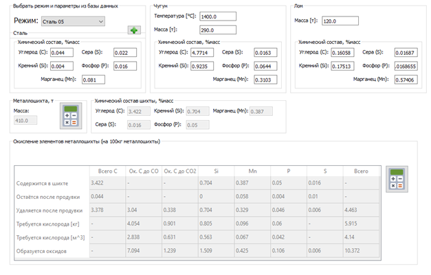

Примеры работы программного коплекса
После ввода исходных данных, пользователю необходимо поочередно нажимать кнопки с иконкой калькулятора

После ввода исходных данных, пользователю необходимо поочередно нажимать кнопки с иконкой калькулятора